Part 1.1: Convolutions from scratch
Convolution is slide the flipped kernel on the image and sum up the products. I pad zeros around the image so output has same size as input ("same" mode). For kernel height kh, I put kh//2 rows of zero on top and kh-1-kh//2 rows at bottom, this is same as how scipy do it, so even kernel like Dx also match.
Four loops version:
def conv_4loops(im, k):
H,W=im.shape
kh,kw=k.shape
ph=kh//2
pw=kw//2
kf=k[::-1,::-1] # flip kernel, this is convolution not correlation
# pad zero, output same size
padded=np.zeros((H+kh-1, W+kw-1))
padded[ph:ph+H, pw:pw+W]=im
out=np.zeros((H,W))
for i in range(H):
for j in range(W):
s=0.0
for u in range(kh):
for v in range(kw):
s=s+padded[i+u, j+v]*kf[u,v]
out[i,j]=s
return out
Two loops version, the inner two loops is replaced by numpy multiply and sum:
def conv_2loops(im, k):
H,W=im.shape
kh,kw=k.shape
ph=kh//2
pw=kw//2
kf=k[::-1,::-1]
padded=np.zeros((H+kh-1, W+kw-1))
padded[ph:ph+H, pw:pw+W]=im
out=np.zeros((H,W))
for i in range(H):
for j in range(W):
# inner two loop change to numpy
out[i,j]=np.sum(padded[i:i+kh, j:j+kw]*kf)
return out
I test on a 320x400 gray picture of myself and compare with scipy.signal.convolve2d(im, k, mode='same', boundary='fill', fillvalue=0):
| Kernel | 4 loops | 2 loops | scipy | max |diff| vs scipy |
|---|---|---|---|---|
| 9x9 box | 1.96 s | 0.28 s | 0.011 s | 1.9e-15 |
| Dx = [1, -1] | 0.083 s | 0.28 s | 0.0008 s | 0 |
| Dy = [1, -1]T | 0.097 s | 0.28 s | 0.0010 s | 0 |
Runtime. The results are same, only float error. Pure python loop is about 200 times slower than scipy for the 9x9 box. The two loops version still call numpy one time for every pixel (128,000 times), so for the small Dx kernel it is even slower than four loops. scipy is C code, and for big kernel it can use FFT.
Boundary. My code and scipy with boundary='fill' both think outside the image is all black. So the box filter get a dark frame around the picture (the average near border include zeros), and derivative filter get a fake edge along the border. scipy also can mirror the image (boundary='symm'), then no such problem, I use this one in Part 1.2 and 1.3.
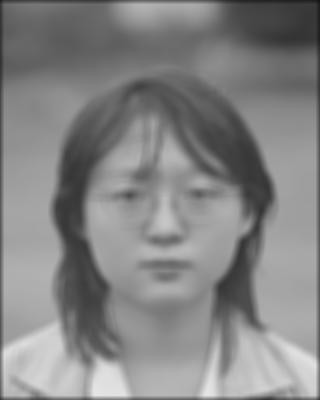
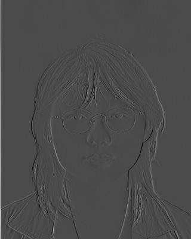
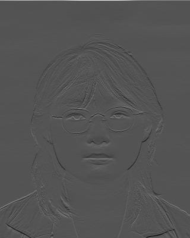
Part 1.2: Finite difference operator
Convolve the cameraman (float in [0, 1]) with Dx and Dy to get partial derivative, then gradient magnitude for every pixel:
For edge image, keep the pixel whose magnitude is bigger than a threshold.
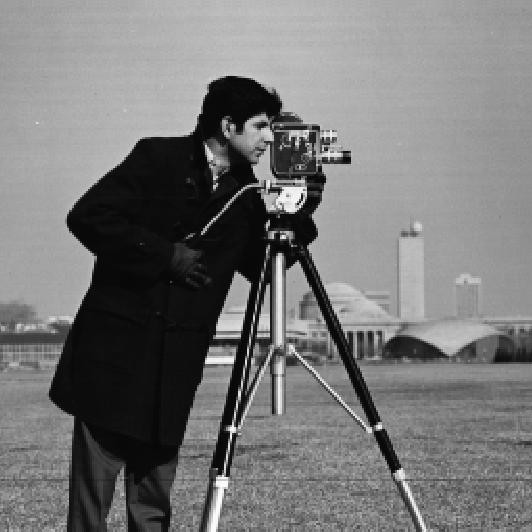
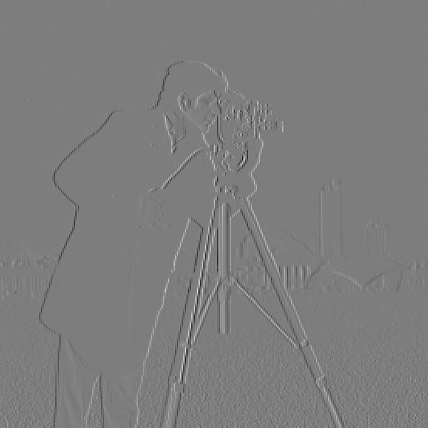
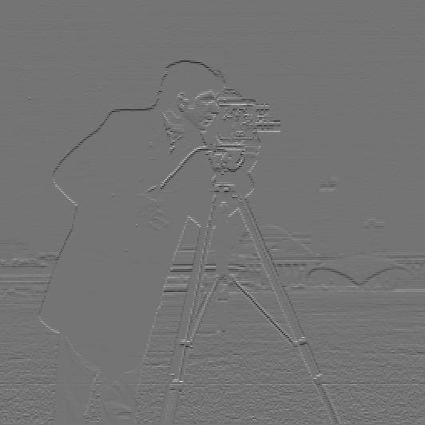
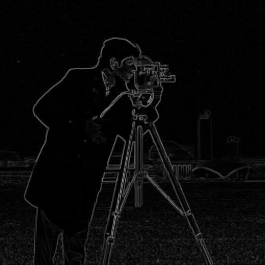
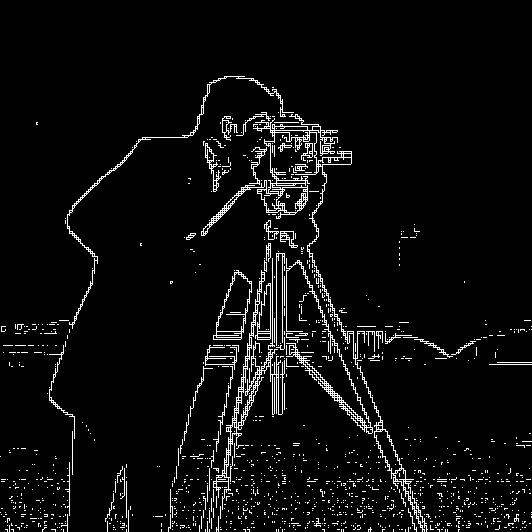
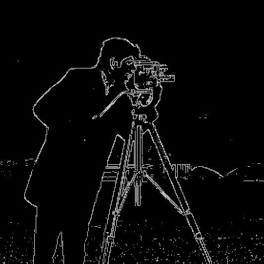
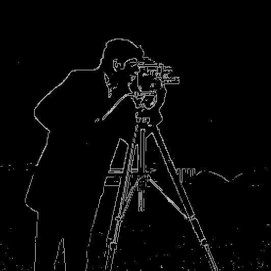
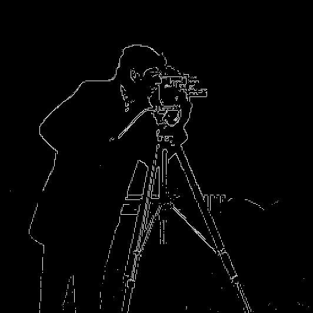
I choose 0.25. When threshold is lower than 0.2, the grass become many white dots, because the 2 pixel filter react to every small change in the texture. When 0.3, noise is gone but the buildings on the right and the far tripod leg also start to disappear. 0.25 keep the coat, the camera, all tripod legs and most of the skyline, only few grass dots left. It is a trade off, if I want to remove all grass dots, the weak but real edges of building also removed.
Part 1.3: Derivative of Gaussian filter
Difference filter only look at two pixels so it is noisy. I make a 2D Gaussian by cv2.getGaussianKernel(11, 1.5) and outer product g @ g.T, blur the image first, then do the same thing as 1.2.


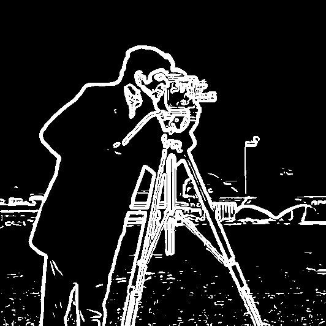
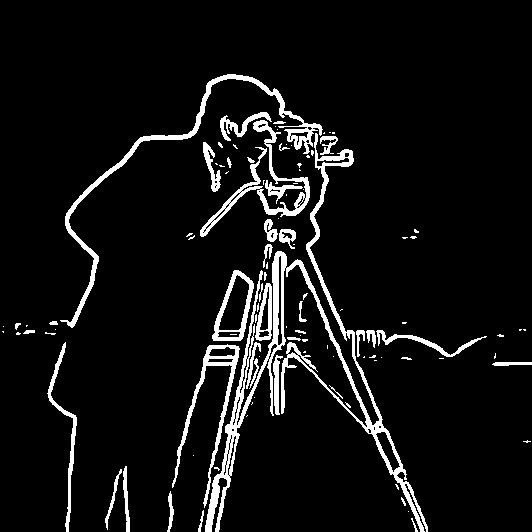
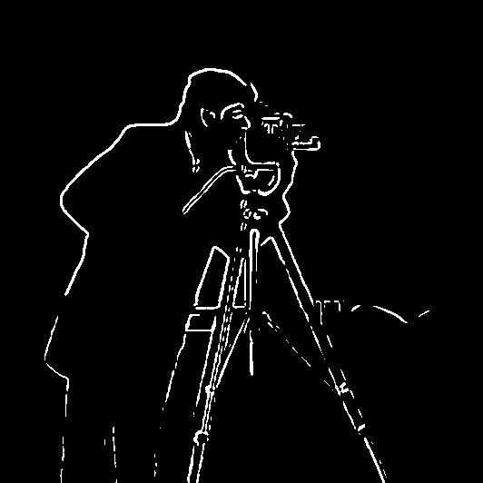
What is different: gradient values become much smaller (one step is spread to several pixels), so the threshold go down from 0.25 to 0.06. The edges are thicker and continuous, not broken dash any more, and the grass texture almost gone, because blur already remove it before derivative. So we get less noise and also less missing edge at same time.
DoG: one convolution instead of two
Convolution is associative, (I * G) * Dx = I * (G * Dx), so I convolve the Gaussian with Dx and Dy first to get two DoG filters, then image only need convolve one time.
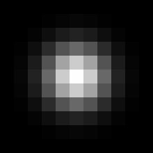
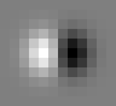
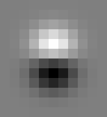
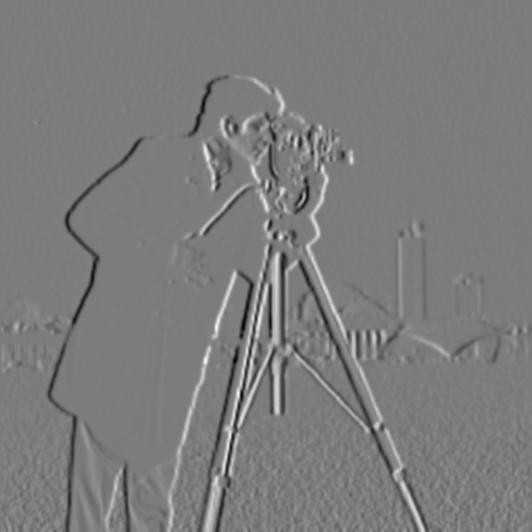
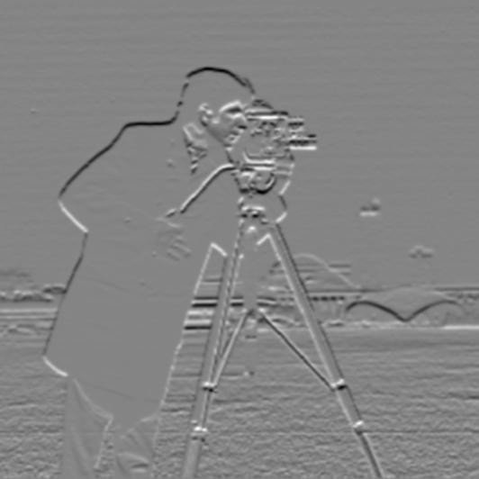
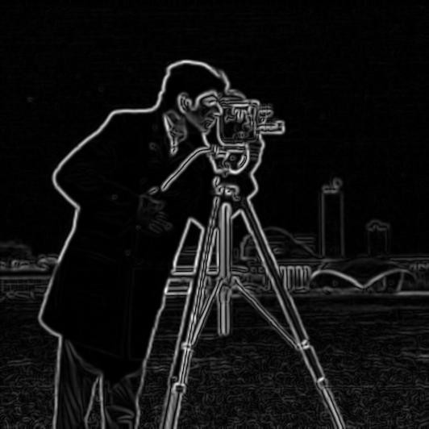

Verify: gradient magnitude of the two ways differ at most 1.1e-15, and the edge maps are exactly same for every threshold.
Part 2.1: Image sharpening (unsharp masking)
Gaussian blur keep the low frequencies. Original minus blur is the high frequencies (edges, texture). Add α times high frequencies back, then image look sharper:
The right side is one single convolution, this kernel is called unsharp mask filter. Two ways give same image (max difference 6e-14).
Taj Mahal, σ = 1.5
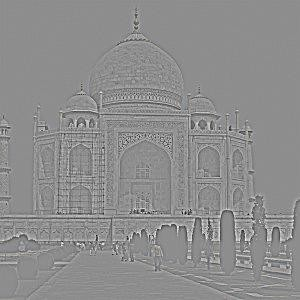
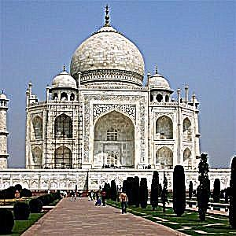
α = 0.5 to 1, the carving and the people become more clear. α = 2, there is halo around the dark trees. α = 4, the sky become grainy because JPEG noise is also high frequency, and the dome looks like has an outline. Sharpening do not add new information, it only make the existing edges stronger, so the good α depend on how much noise in the picture.
Doe Library, σ = 2
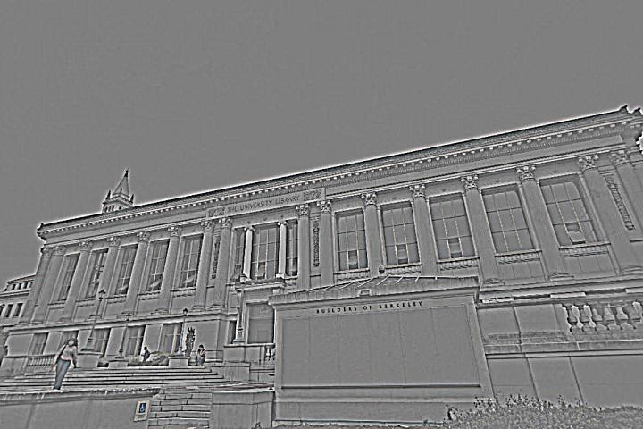
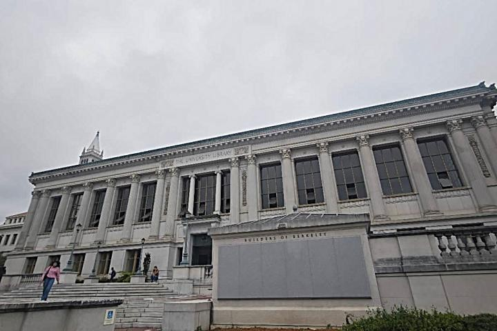
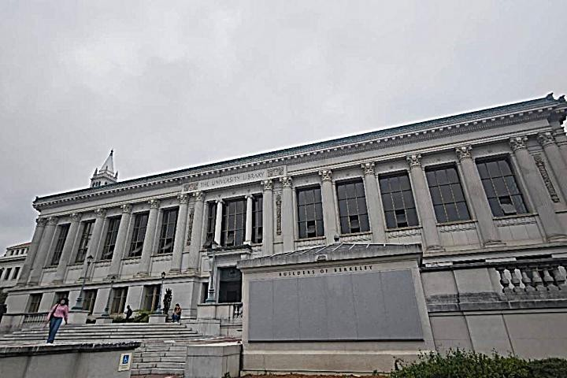
The columns and window frames stand out at α = 1, α = 2 already a bit too strong. The flat gray sky is still flat, because there is no high frequency to add.
Evaluation: blur a sharp image and sharpen it again
Take a sharp lion photo, blur with σ = 2, then unsharp mask with same σ.
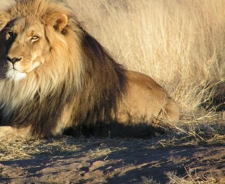
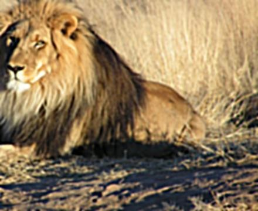
After sharpening the blurred lion looks more clear again, but the thin hairs of the mane do not come back, they are averaged away by the blur and not in the image any more. With α = 5 the edges that still exist get halo, but the fur is still smooth. Unsharp mask only make the remaining high frequency stronger, it is not the inverse of blur.
Part 2.2: Hybrid images
Hybrid image = low frequencies of one picture + high frequencies of another picture. When close, high frequency win, when far away only low frequency left. Low pass: Gaussian with σlow. High pass: image minus Gaussian with σhigh. All hybrids here are gray.
Alignment use the starter code, but I type the two eye positions by hand instead of click: recenter on the middle of eyes, rescale so the eye distance same, rotate one image, crop both to same size. I give the low frequency picture as the one to rotate, because black corner is not so obvious on blurred image. The black borders in the results come from this padding and rotation.
Derek and Nutmeg, full process
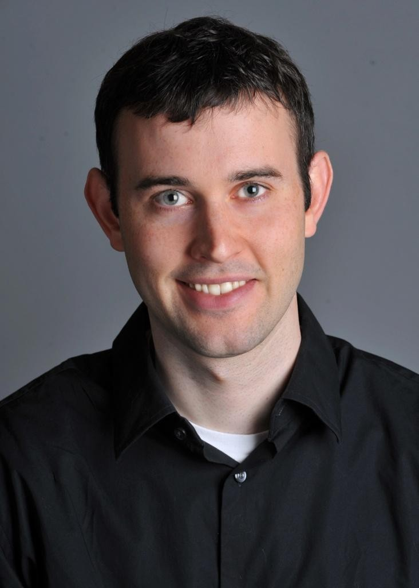
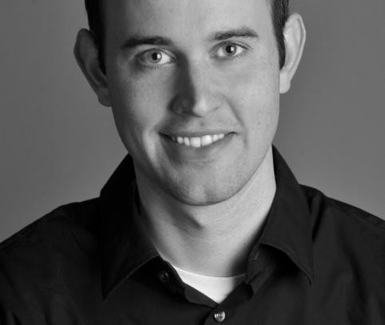
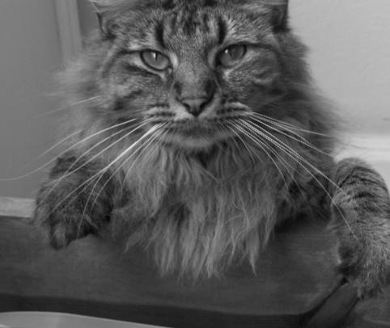
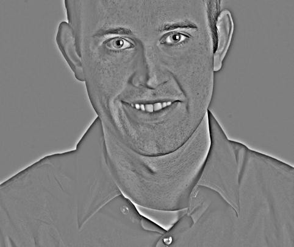
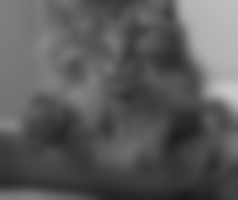
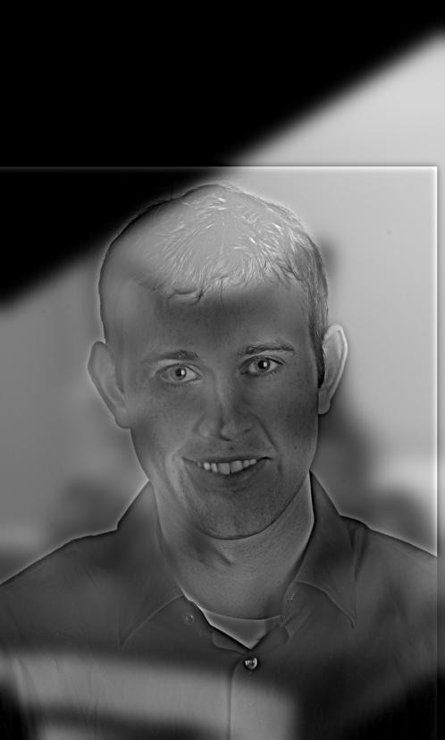
Log magnitude of Fourier transform, np.log(np.abs(np.fft.fftshift(np.fft.fft2(img)))):
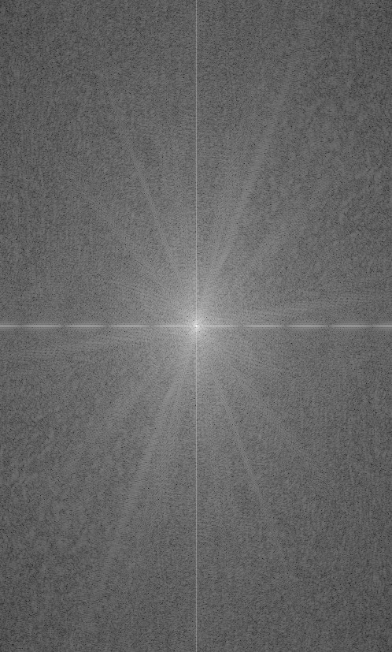
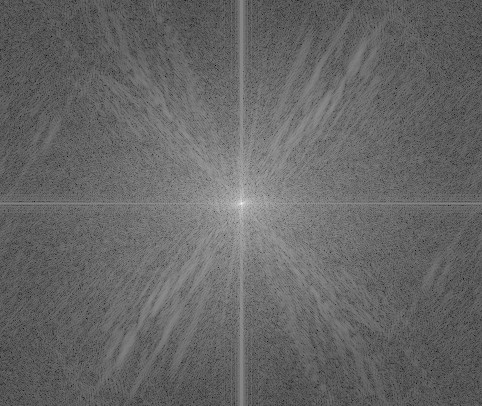
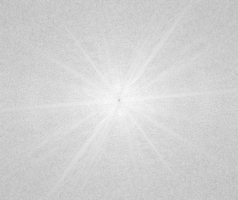
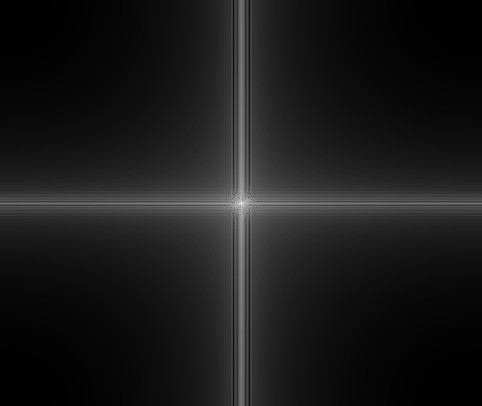
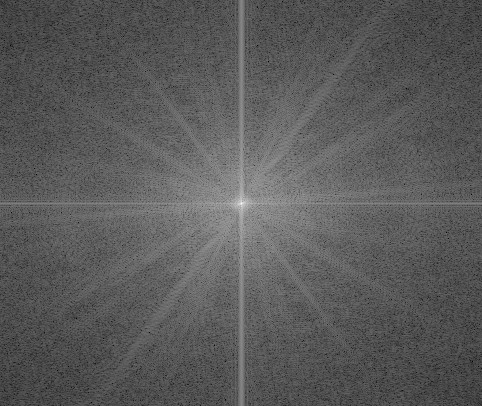
Cutoff frequency. Gaussian with std σ pixel make frequency f (cycles/pixel) drop to half at about f ≈ 0.19/σ. So σlow = 10 keep the detail bigger than about 50 pixels per cycle, and σhigh = 4 keep the detail smaller than about 20 pixels, on the 498x827 aligned image. I try some different values:
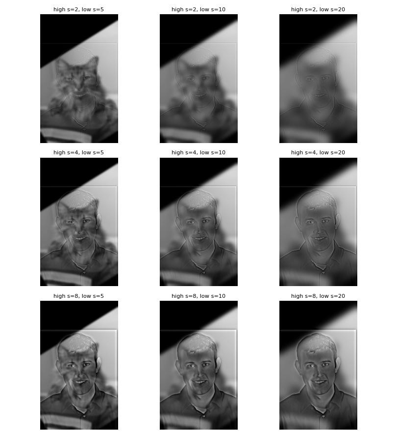
σlow = 5, the cat is still too sharp and fight with Derek when close, like double exposure. σlow = 20, the cat become a blob and cannot recognize it is a cat. σhigh = 2 only leave thin outline of Derek, σhigh = 8 keep too much of Derek so he is visible in every distance. σhigh = 4, σlow = 10 switch most clean. σlow should be clearly bigger than σhigh, so the two images do not share same frequency band.
House cat and lion
Cat when close, lion when far, aligned on the eyes. σhigh = 4, σlow = 6. Lion need smaller σlow than Nutmeg because its face is small in the picture, if blur more, the mane and the grass mix to one blob.
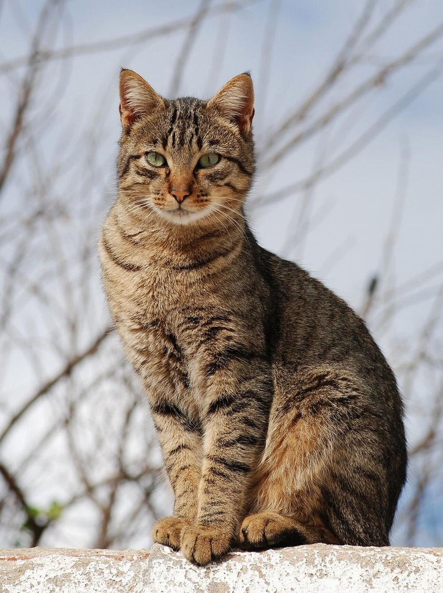
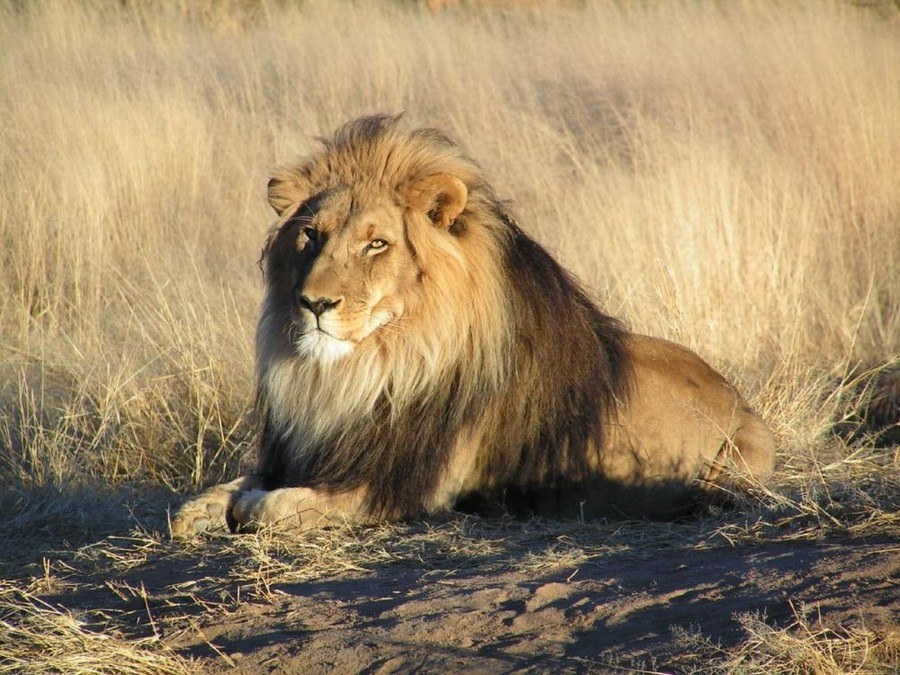
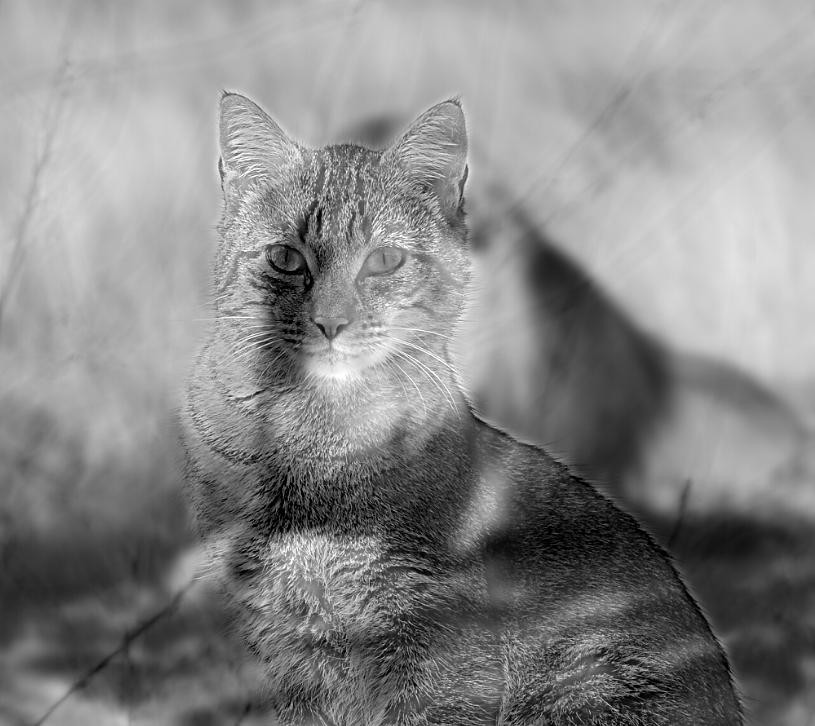
Failure: Doe Library, close and far
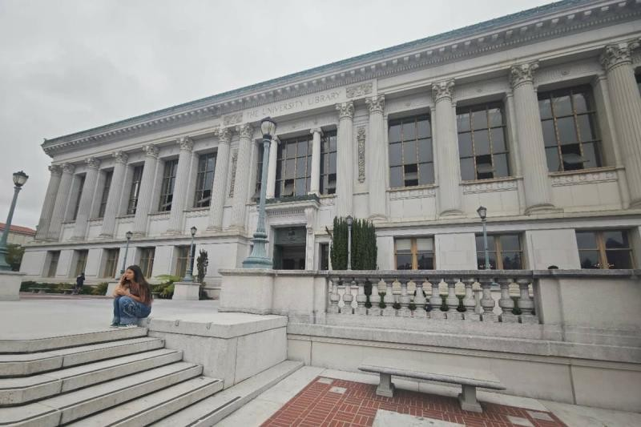
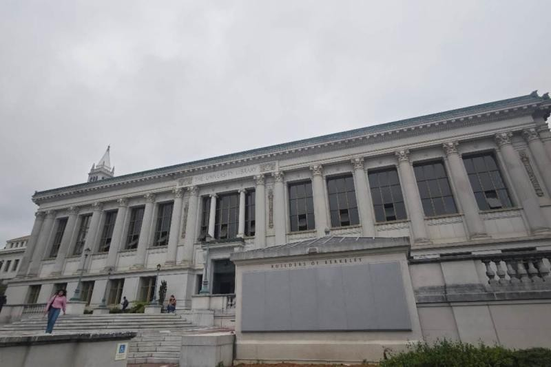
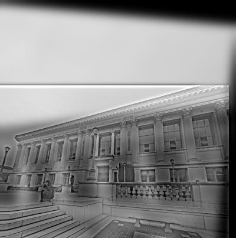
This one not work. Both pictures are only straight lines and repeated windows, so the blurred building is just some smeared lines, it never become an object by itself, in every distance you only see the sharp building plus some smear. Also the perspective is different, so the lines cannot be aligned by scale and rotation. Hybrid need two images with similar big structure, and the low frequency one need big smooth area that can survive the blur.
Part 2.3: Gaussian and Laplacian stacks
Stack is like pyramid but no downsample, every level keep full size. Gaussian stack: level 0 is the image, every next level is the last level blurred with σ doubled (2, 4, 8, 16, 32), so the detail disappear at same speed as pyramid. Laplacian stack: difference of two neighbour Gaussian levels, the last level is the most blurry Gaussian itself, so sum of all Laplacian levels is the original image (reconstruction error 1e-16). Everything is written from scratch, only use Gaussian kernel from cv2.getGaussianKernel.
Gaussian stack of apple and orange:

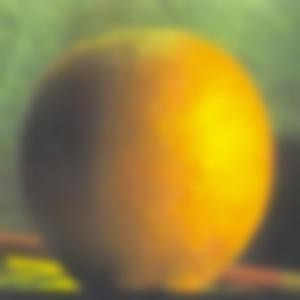

Laplacian stack (level 0 to 4 are stretched to full contrast for display, level 5 is just the residual):
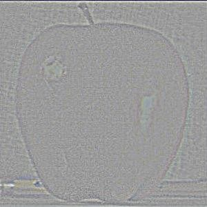
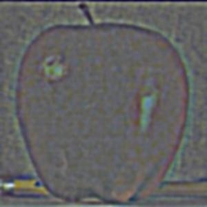
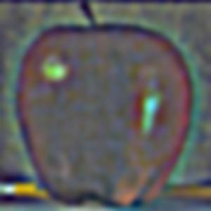
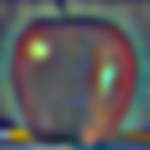
The fine levels have the peel texture and the outline, middle levels have the highlight and shading, last level only have the overall colour. Below is the recreation of Figure 3.42 in Szeliski (level 0, 2, 4 and the sum): left column is apple Laplacian level times the blurred mask, middle column is orange level times (1 − mask), right column is their sum; bottom row add all levels together.
Part 2.4: Multiresolution blending
Use Laplacian stacks LA, LB and a Gaussian stack GM of the mask (1 means show A), blend every level separately and add them up:
The mask become more blurry in every level, so fine detail is cut with sharp seam (sharp cut between two textures looks natural), but colour and shading are mixed in a wide band, so the seam is hidden. I use 6 levels, σ = 2 doubling, colour image is done channel by channel.
The oraple (vertical seam)


Liger (vertical seam, aligned on the eyes)
Stripes and mane stop with sharp cut in fine scale, looks like real fur; the yellow and orange background fade to each other in a wide band. The black band on top is padding from the alignment.
Cat on Derek (ellipse mask), my favourite
The cat is aligned to Derek's eyes with the code in 2.2 (Derek is scaled down to the cat's eye distance), the mask is an ellipse around the cat head.
In fine levels the fur end exactly at the ellipse and Derek's hair and collar start; in level 4 the pale sky behind cat and the gray studio background are mixed in a band as wide as the head, so no colour edge, only a soft glow around the head.
The most important thing I learned
The most direct feeling from this project is seeing how an image can be separated to low frequency and high frequency. The blurred image is the low frequency, it only has the big shape and the colour; original minus blur is the high frequency, it only has the edges and the texture. Once separate them, the same idea shows in many forms: add the high frequency back and the image become sharper, put the high frequency of one image on the low frequency of another and we get the hybrid image, and split the image to many frequency bands then we can blend two images with different seam width in every band. Through these parts I also become more familiar with the way to treat an image as a signal, like convolution, Gaussian filter, gradient and Fourier transform, and the common operations on images, such as blur, sharpen, edge detection, alignment and blending.
Image credits: cameraman, Taj Mahal, apple/orange, Derek and Nutmeg are from the course. Portrait (Part 1.1) and Doe Library photos are my own from Project 0. Lion by Kevin Pluck (CC BY 2.0), cat by Alvesgaspar (CC BY-SA 3.0), tiger from Wikimedia Commons (CC BY-SA 2.5).